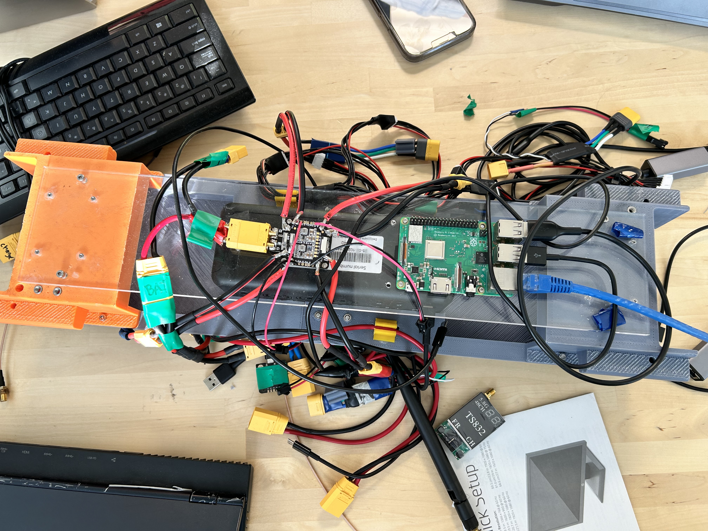
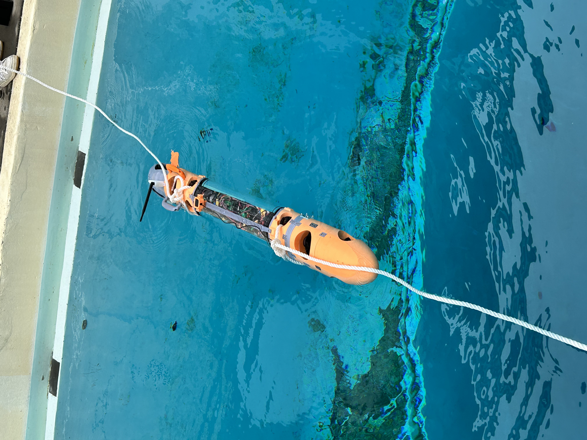
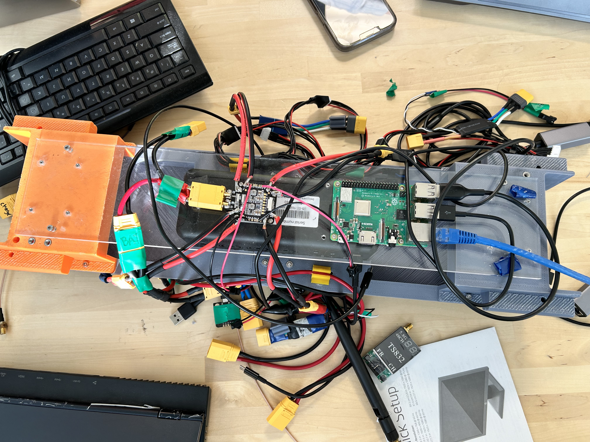
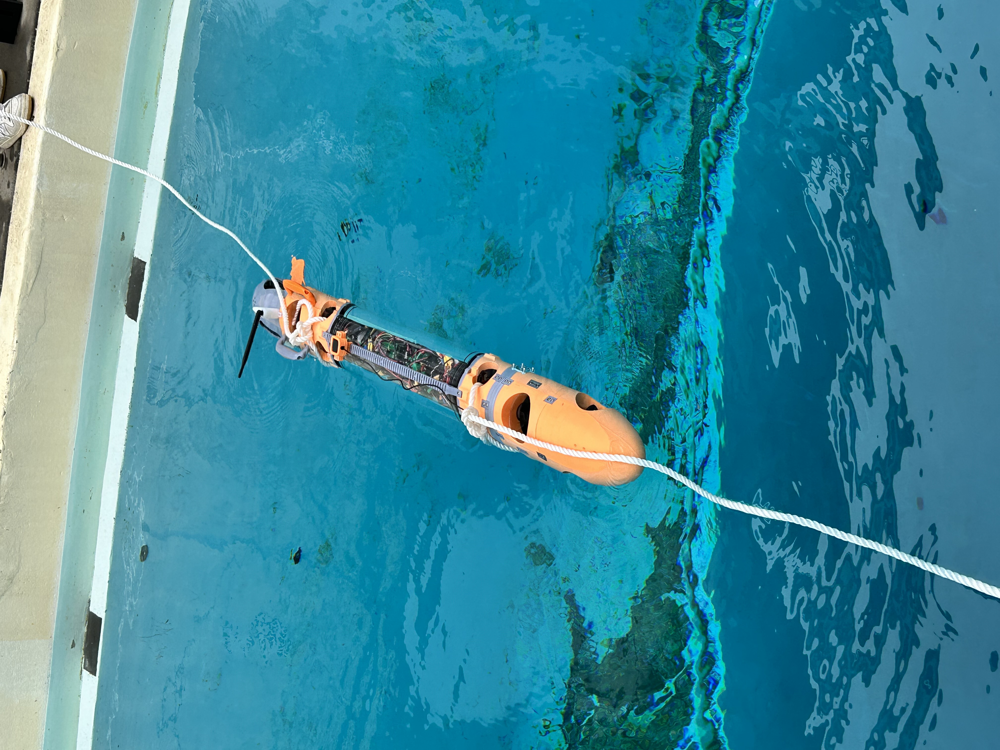
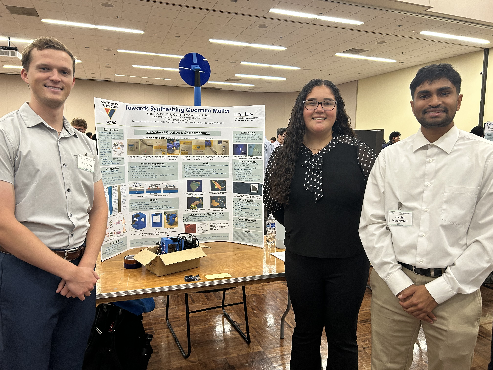

UCSD Yonder Deep
As I was a student of UCSD, I joined Yonder Deep, an underwater engineering club to gain experience
in designing, prototyping, and integrating sub-assemblies into an Autonomous Underwater Vehicle.
For background, Yonder Deep's mission is to create AUVS and USVs(Unmanned Surface Vehicles) to aid
oceanographic researchers in gathering data of icebergs in the Arctic for the purposes of climate
change study. My first task as a Mechanical member of the club was to redesign the AUVs electronic bed,
as it was bulky and difficult to integrate into the AUVs water-tight chamber. With two other engineering
students, we brainstormed ideas on how to minimized the amount of support while maintaining holding up
the electronics needed to power and control the AUV. After discussing with the Electrical subteam,
we deliberated on a final design shown below.

 The following CAD assembly shows the AUVs 4 batteries(blue), and Audient(black box) secured by 2 battery
brackets and an audient bracket. The brackets are bolstered down to a 2 part bottom tray which rests on
the bottom of the translucent acrylic tube. Two flanges(black cylindrical component) with O-rings in the
grooves are on either side of the acrylic tube to provide the water-tight seal for this sub-assembly. A
laser cut acrylic plate rests on top of the 2 battery brackets and is the platform for which all
circuits(PDB, Raspberry Pi, motor drivers) are bolted to.One of the major delays this project underwent
was that Yonder Deeps Electrical Team was still deciding on the type of batteries to use. This resulted
in the design for the battery bracket to be changed several times before the final design could be manufactured.
After 3D printing and assembling all components, the final sub-assembly was ready to be integrated into the AUV.
Here is a picture of the final product.

We integrated it into the final AUV and tested it at UCSD in a saltwater pool.

The following year, I held the position of the Mechanical Lead. That year, Yonder Deep embarked on two new projects, a mini-AUV
that will be used for our Software sub-team to run tests easier and a winch that will be attached to an Unmanned Surface Vehicle.
Since these projects have been introduced, we have finalized designs for both and began prototyping our winch. I am very excited
to see what the new members of Yonder Deep will create next!
Here is the Yonder Deep website for more information: Yonder Deep
The following CAD assembly shows the AUVs 4 batteries(blue), and Audient(black box) secured by 2 battery
brackets and an audient bracket. The brackets are bolstered down to a 2 part bottom tray which rests on
the bottom of the translucent acrylic tube. Two flanges(black cylindrical component) with O-rings in the
grooves are on either side of the acrylic tube to provide the water-tight seal for this sub-assembly. A
laser cut acrylic plate rests on top of the 2 battery brackets and is the platform for which all
circuits(PDB, Raspberry Pi, motor drivers) are bolted to.One of the major delays this project underwent
was that Yonder Deeps Electrical Team was still deciding on the type of batteries to use. This resulted
in the design for the battery bracket to be changed several times before the final design could be manufactured.
After 3D printing and assembling all components, the final sub-assembly was ready to be integrated into the AUV.
Here is a picture of the final product.

We integrated it into the final AUV and tested it at UCSD in a saltwater pool.

The following year, I held the position of the Mechanical Lead. That year, Yonder Deep embarked on two new projects, a mini-AUV
that will be used for our Software sub-team to run tests easier and a winch that will be attached to an Unmanned Surface Vehicle.
Since these projects have been introduced, we have finalized designs for both and began prototyping our winch. I am very excited
to see what the new members of Yonder Deep will create next!
Here is the Yonder Deep website for more information: Yonder Deep
Senior Capstone Project
I worked with 2 other engineering students, Kalie Garcia and Scott Ceklarz, to aid the research of Dr. Carlos Manuel Torres Jr., a researcher at NIWC(Naval Information & Warfare Center) Pacific. His objective was to study the quantum engineering sub-field of Twistronics. This is the study of the opto-electronic effects of 2 dimensional materials stacked on top of each other and twisted at a certain angle. These resultant materials can be implemented into electronic devices to improve signal transmission for all radio frequencies. This was a wonderful learning experience, as this project dived more into nano-engineering than mechanical engineering. However, we were still able to incorporate aspects of mechanical engineering in our project. All documentation can be found on this webpage: Towards Synthesizing Quantum Matter 